Système d'Information Géographique
- Présentation de QGIS
- Formation QGIS
- Liens pour téléchargements de données:
- Pratiques: Cartograpfier les données télécharées: Création d'une carte:
- Carte choroplèthetélécharger statistiques
- Cartes réalisée par mes étudients :
Présentation de QGIS
- Logiciel en système d’information géographique (SIG) Open Source et gratuit : http://qgis.org/
- Multi-plateforme : Linux, FreeBSD, Mac OS X, Windows et Android
- Multi-lingue & Multi-utilisateur
- QGIS est un logiciel SIG libre qui a débuté en mai 2002(22 ans)
Sources
Fichiers > 226 formats
Base de données:PostGIS (PostgreSQL), SpatiaLite, Oracle Spatial, MSSQL
Services web: WFS, WMS,MCS---GoogleEarth, OSM, Bing, ...
utilisations
Visualisation
Cartographie
Traitement,Logiciels tierces,+ «Appstores»
WebGIS
Installer QGIS
- Essayer QGIS et autres utilitaires GIS "OsGeoLive"
- installer QGIS
Démarrer QGIS

Naviguer sur le canevas de carte
 | Se déplacer dans la carte |
 | Zoom + |
 | Zoom - |
 | Zoom précédant |
 | Zoom Suivant |
 | Zoom su l'emprise totale |
Premier pas:
- Ouvrir un projet
- Découvrir l'interface
- Afficher /masquez les couches de données
- Panoramique et zoom
- Modifier la symbologie des données
- Sélectionner les données
- Mesurer les distances
- Créer des mises en page de carte
- Ajouter des légendes, des titres, des flèches Nord, et d'autres éléments
- Imprimer une carte au format PDF
Enoncé:
- créer un nouveau projet QGIS
- Insérer des couches issue de données de différents types: ShapeFile, GeoPackage, SQLite...
- Modifier la Symbologie des couches
- créer une couche vecteur
- ....
Ajout d'une couche ShapeFile
Ajout d'une couche GeoPackage
Ajout d'une couche SpatiaLite
Réorganisation des calques
Les calques (les couches)dans votre liste de calques sont dessinés sur la carte dans un certain ordre. Le calque en bas de la liste est dessiné en premier, et le calque en haut est dessiné en dernier. En changeant leur ordre dans la liste, vous pouvez changer l’ordre suivant lesquel ils sont dessinés.
L’ordre dans lequel les couches ont été chargées dans la carte n’est probablement pas logique à ce stade. Il est possible que la couche des routes soit complètement cachée parce que les autres couches sont au-dessus d’elle.
Exercice 1: Création de cartes
Cette section est conçue pour vous aider à vous familiariser avec le flux de travail de base consistant à importer des couches de données, à appliquer la symbologie, à ajouter des étiquettes et à concevoir des mises en page pour les cartes. Nous travaillerons sur un fichier texte contenant des enregistrements historiques de tremblements de terre et le transformerons en une visualisation informative comme celle ci-dessous.
Suivez les étapes:
- Ouvrez QGIS.
- Cliquez sur le bouton Ouvrir le gestionnaire de sources de données.
- Sélectionnez l'onglet Vecteur. Cliquez sur le bouton … à côté de Ensemble(s) de données vectorielles et accédez au répertoire de données.
- Sélectionnez le fichier ne_10m_land.shp et cliquez sur Ouvrir. Dans la fenêtre Gestionnaire de sources de données, cliquez sur Ajouter.
Vous obtienderez une couche contient des polygones représentant les continents de la terre.
Et ces étapes:
- Cliquez à nouveau sur le bouton Ouvrir le gestionnaire de sources de données.
- Cliquez sur le bouton Ouvrir le gestionnaire de sources de données.
- Sélectionnez l'onglet Vecteur. Cliquez sur le bouton … à côté de Ensemble(s) de données vectorielles et accédez au répertoire de données.
- Sélectionnez le fichier gem_active_faults_harmonized.gpkg et cliquez sur Ouvrir. Dans la fenêtre Gestionnaire de sources de données, cliquez sur Ajouter.
Vous obtienderez une couche de type multilignes représentant les plaques tectoniques .
juste une dernière couche
- Nous allons maintenant importer une autre couche de points sismiques. Cliquez à nouveau sur le bouton Ouvrir le gestionnaire de sources de données.
- Sélectionnez l'onglet Texte délimité.
- Cliquez sur le bouton … à côté de Nom du fichier
- Sélectionnez le fichier significative_earthquakes_2000_2020.tsv. Il s'agit d'un fichier texte au format TSV (Tab-Separated Values).
- Accédez au répertoire de données.
- Dans la section Format de fichier, sélectionnez Délimiteurs personnalisés.
- Cochez la case Tab. Choisissez EPSG:4326 comme géométrie CRS.
- Dans la section Définition de la géométrie, assurez-vous que Longitude est sélectionnée comme champ X et que Latitude est sélectionnée comme champ Y.
- Laissez les autres options à leurs valeurs par défaut et cliquez sur Ajouter.
Suite
Un nouveau calque, significative_earthquakes_2000_2020, sera ajouté au panneau Calques et affiché sur le canevas. Cette couche contient plus de 1 000 enregistrements de tremblements de terre importants enregistrés entre 2000 et 2020. Cliquez avec le bouton droit sur la couche significative_earthquakes_2000_2020 et sélectionnez Ouvrir la table attributaire. Examinez tous les attributs et leurs valeurs.
Cliquez avec le bouton droit sur la couche significative_earthquakes_2000_2020 et sélectionnez Ouvrir la table attributaire. Examinez tous les attributs et leurs valeurs.
Information:
Connaissez-vous Null Island? La couche ne_10m_land contient un polygone pour cette entité. Localisez ce polygone sur la carte.
Astuce: ouvrez la table attributaire, recherchez et sélectionnez Null Island. Utilisez ensuite le bouton Zoomer la carte sur les lignes sélectionnées.
Téléchargement de données
Téléchargement de données
- données statistiques: Office Nationnal des Statisitques
- Limite administrative: DIVA-GIS
- Télécharger les données cartographiques OpenStreetMap
- données OpenStreetMap En utilisant: les extentions QGIS
- Données raster: Digital Elevation Model
- Données raster:The Humanitarian Data Exchange
- Acheter des cartes:Institut National de Cartographie et de Télédétection
Office Nationnal des Statisitques
Vous pouvez utiliser les données statistiques fournits par l'ONS puis les représenter graphiquement pour faciliter la lecture visuelle
Par exemple vous pouvez créer une carte de distrubution de population par communes en utilisant les données ONS
MONOGRAPHIE WILAYA BOUIRA
Le fichier en ligne MONOGRAPHIE WILAYA BOUIRA.pdf contient des données statistiques que vous pouvez utiliser afin de s'exercer
Extraction depuis DIVA-GIS
DIVA-GIS est un programme informatique gratuit pour la cartographie et l'analyse de données géographiques (SIG). il fourner également des données spatiales gratuites.
Ouvrez le liens et cliquez sur Free Spatial Data:

Cliquez sur country level data

Dans la liste déroulante selectionnz Algeria

Puis cliquez sur Download

Vous aurez un dossier compressé qui contient trois shapefiles limite administrative de l'Algérie pour les niveaux suivants:
- DZA_adm0: frontière nationnal
- DZA_adm1: frontières wilaya
- DZA_adm2: frontières communale

Choix de la zone d'étude
Vous pouvez extraire les frontière d'une wilaya ou une commune selon l'étude! il y a plusieurs méthodes pour le faire par exemple en utilisant QGIS:
Sauvegarder la selection:
selectionner une commune
Extraction des données OSM.
A partir du QGIS
QuickOSM est un plugin QGIS,son role est de télécharger des données depuis le serveur Overpass.
Nous allons extraire quelques données spatiales liées à une des commune de Bouira
OSM: Limite administrative
Au chapitre précédent nous avons télécharger les limite offertes par DIVA-GIS, QuickOSM offre aussi la possibilité de les télécharger
Ouvrez le gestionnaire de source de données et selectinnez l'onglet explorateur puis cliquez sur XYZ Tiles, double cliquez ensuite sur openstreetmap

La couche Raster OpenStreetMap est insérée

Focaliser Bouira

QuickOSM

QuickOSM
Exécutez le plugin à partir du menu .
Dans la zone préreglage, tapez boundary dans le menu déroulant .
Laissez le champ vide.
Sélectionnez dans le menu déroulant suivant, et ecrire bouira bouira Algeria
Développez le groupe ci-dessous et décochez tous les types de géométrie sur la droite sauf Multipolygones.
Pressez

Une nouvelle couche est ajoutée au panneau , montrant les limites administrative de bouira dans l’étendue sélectionnée.

Sauvegarder
l'icon mentionnée sur la figure à gauche signifier que la couche est temporaire une fois le projet fermé elle sera perdue!
cliquez sur ladite icone pour sauvegarder la couche
Pour n'avoir que la commune de clique droit sur le nom de la couche puis sur
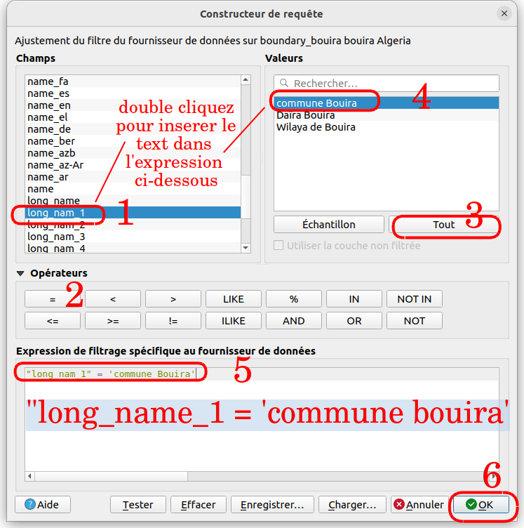 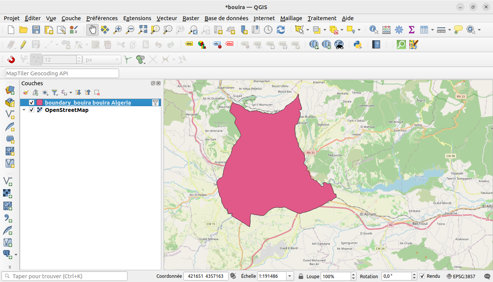Symbologie
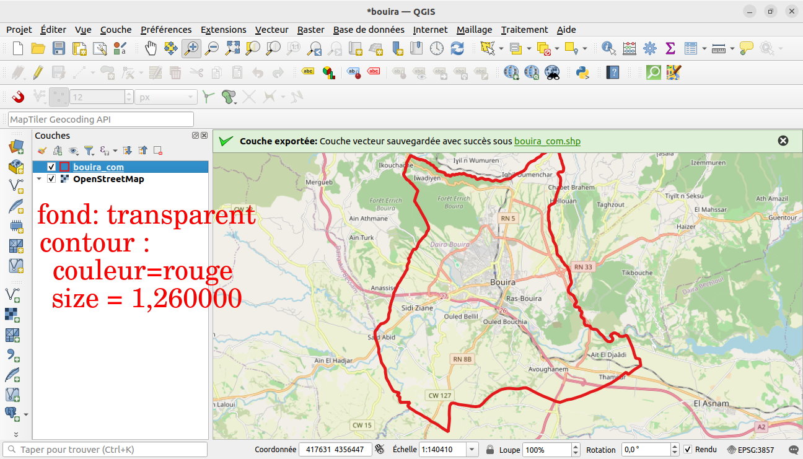Procédez comme ci-dessus pour extraire d’autres données :
et type de géométrie .
, et type de géométrie .
et vérifiez les types de géométrie et .
, et type de géométrie
, et vérifier les types de géométrie et .
et type de géométrie .
pour les 6 étapes suivantes sélectionnez dans le menu déroulant suivant, et ecrire le nom de la couche masque pour toutes les autres couches


 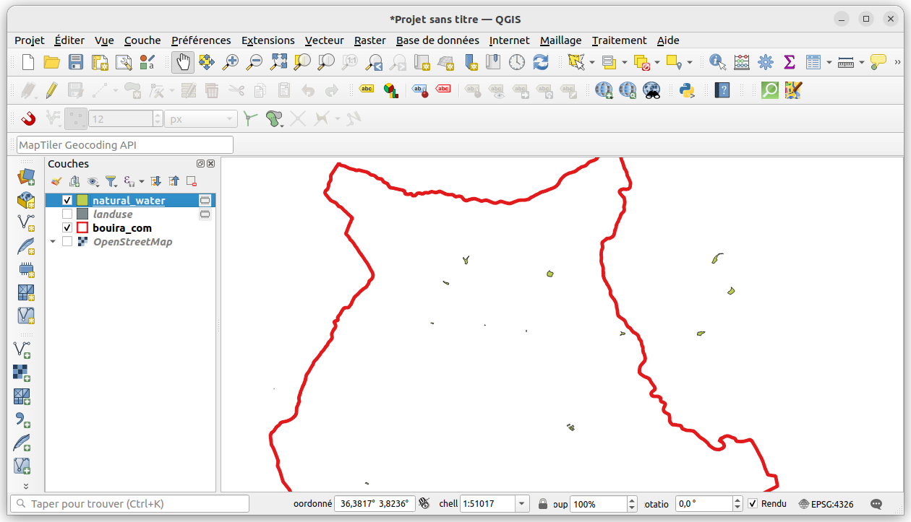
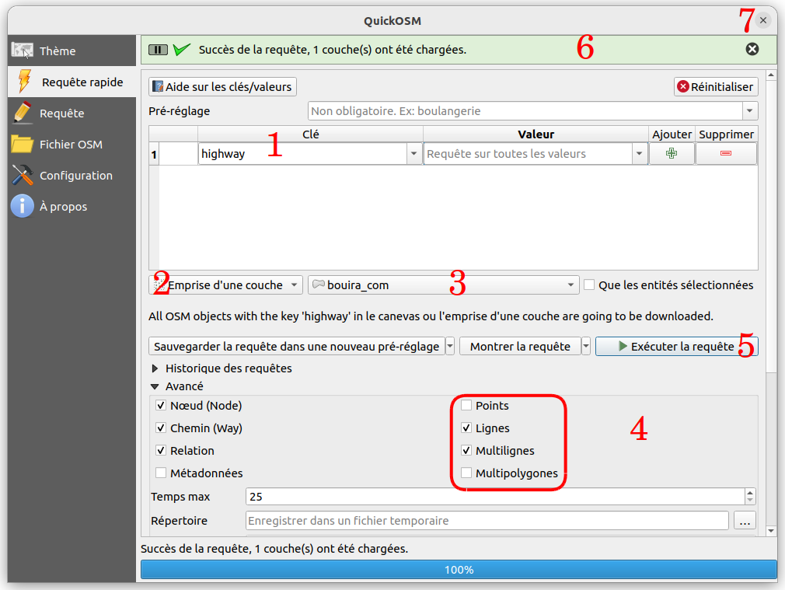
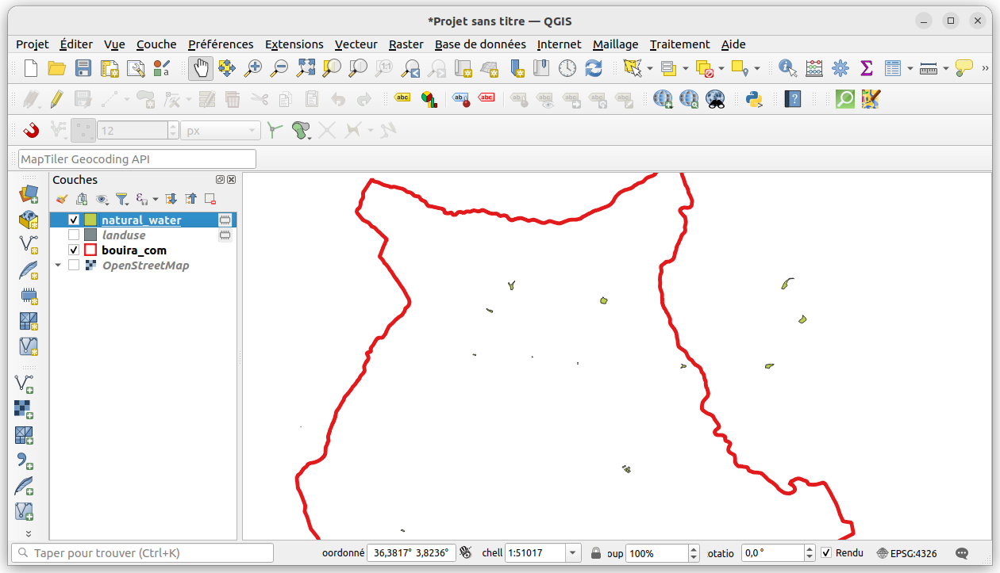
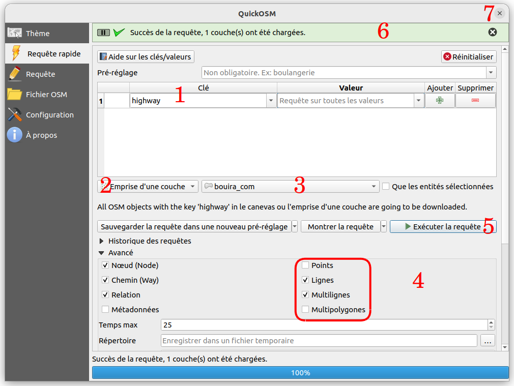
 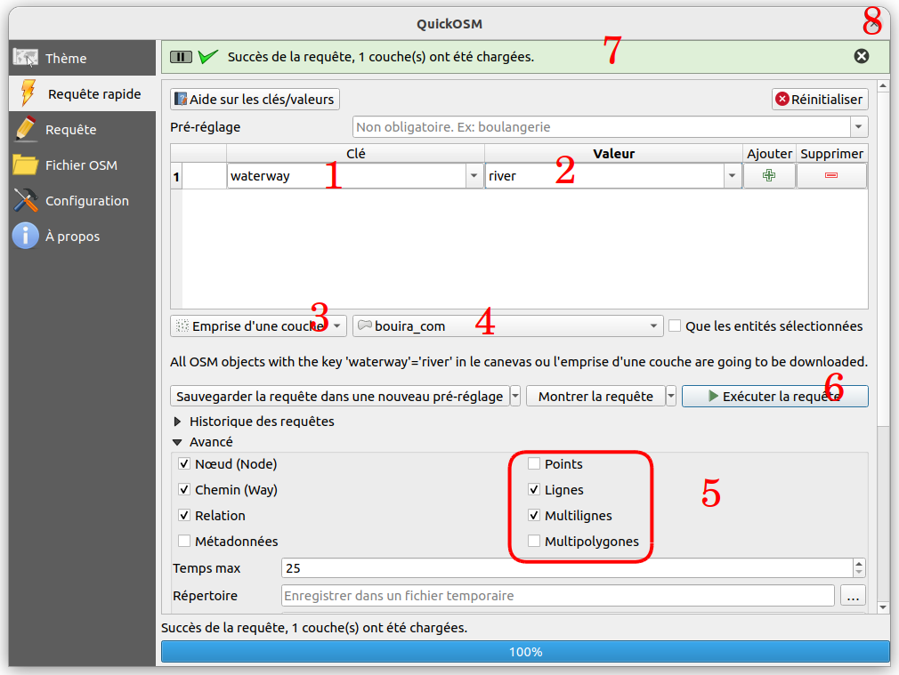
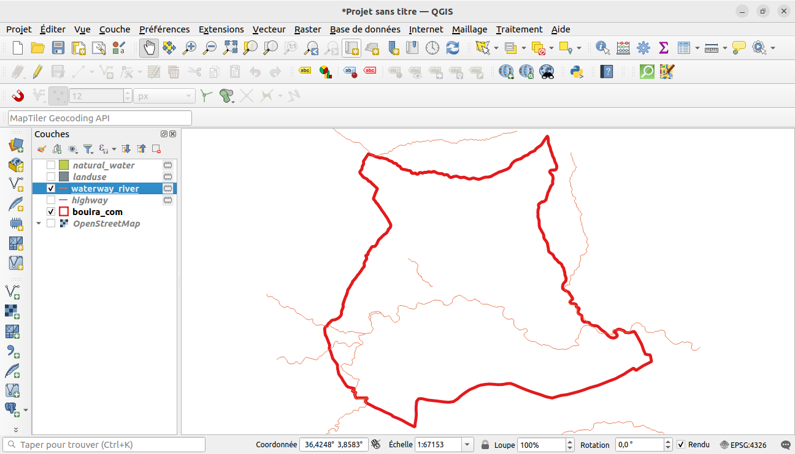
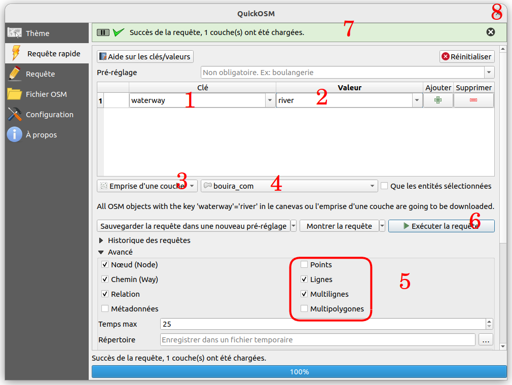
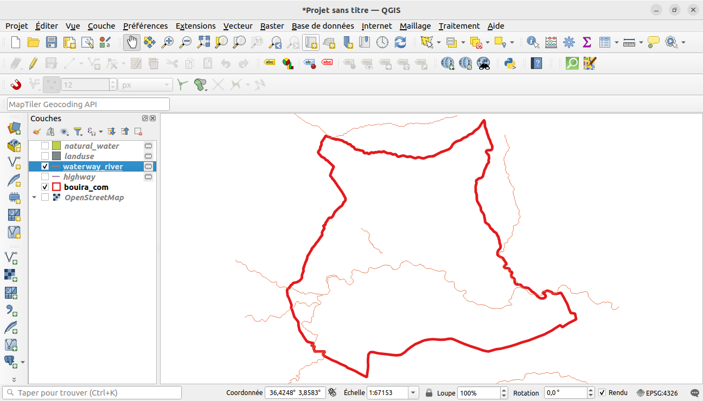


Réorganisation des calques
Les calques dans votre liste de calques sont dessinés sur la carte dans un certain ordre. Le calque en bas de la liste est dessiné en premier, et le calque en haut est dessiné en dernier. En changeant leur ordre dans la liste, vous pouvez changer l’ordre suivant lesquel ils sont dessinés.
Web mapping
Le webmapping (ou cartographie en ligne) est un processus qui permet l’utilisation et l’analyse de cartes sur le réseau Internet. par exemple on peut publier la carte de répartition des infrastrictures de la Direction de la Poste et des Télécommunications. Le web mapping nous permet l'utilisation de l'outil zoom, de déplacement et d'afficher ou masquer les différentes couches fournées ce que rend l'analyse (visuelle) plus facile. on peut trouver facilement les zones qui sont dépourvue de couverture téléphoniques ou d'Internet
Geopandas
GeoPandas est un projet open source visant à faciliter l'utilisation des données géospatiales en Python. GeoPandas étend les types de données utilisés par pandas pour permettre des opérations spatiales sur les types géométriques. Les opérations géométriques sont effectuées par shapely. Geopandas dépend en outre de fiona pour l'accès aux fichiers et de matplotlib pour le traçage.
Installation
Creating a new environment#
Creating a new environment is not strictly necessary, but given that installing other geospatial packages from different channels may cause dependency conflicts (as mentioned in the note above), it can be good practice to install the geospatial stack in a clean environment starting fresh.
The following commands create a new environment with the name geo_env,
configures it to install packages always from conda-forge, and installs
GeoPandas in it:
conda create -n geo_env
conda activate geo_env
conda config --env --add channels conda-forge
conda config --env --set channel_priority strict
conda install python=3 geopandas